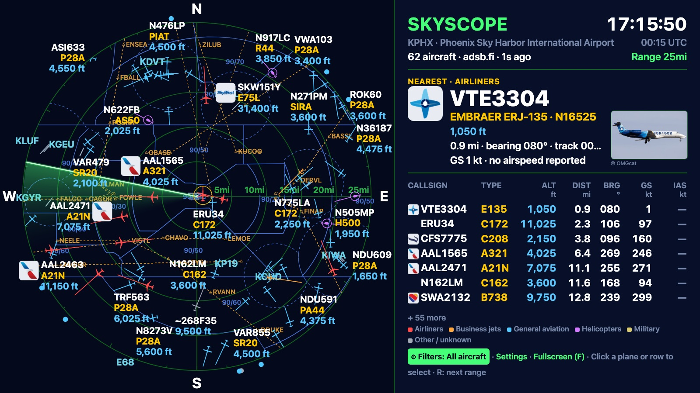
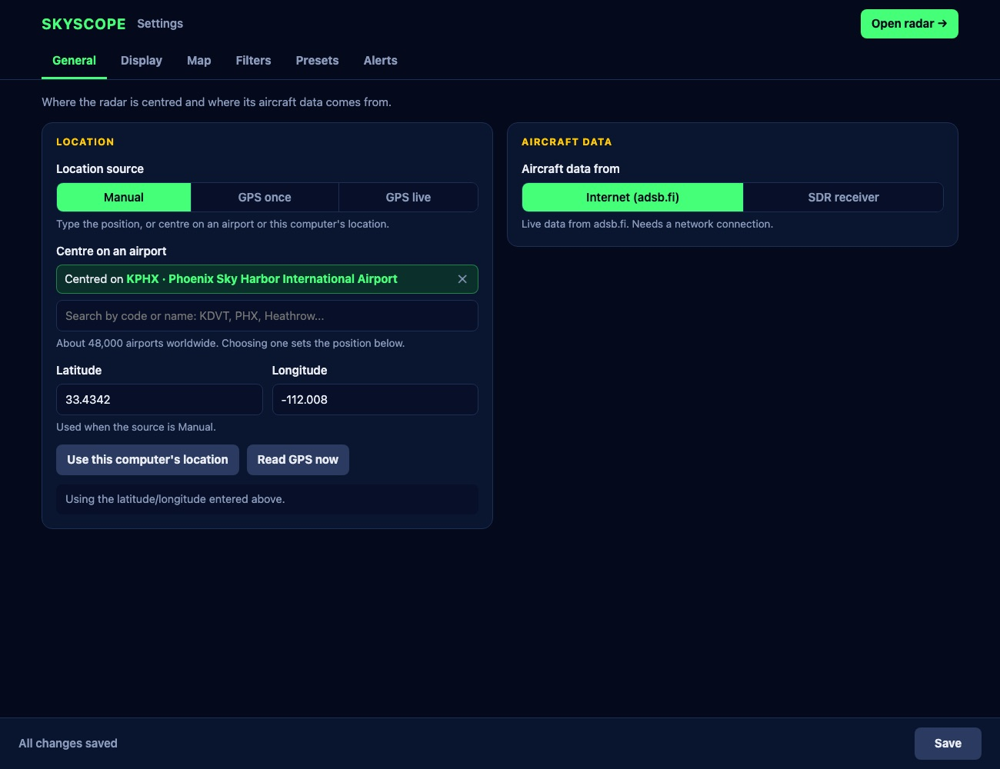
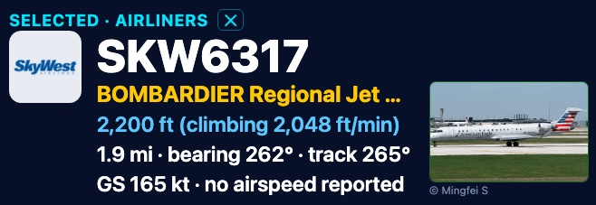
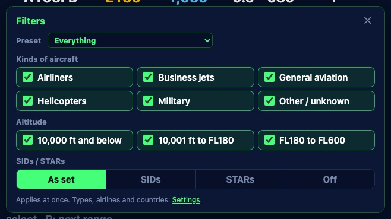
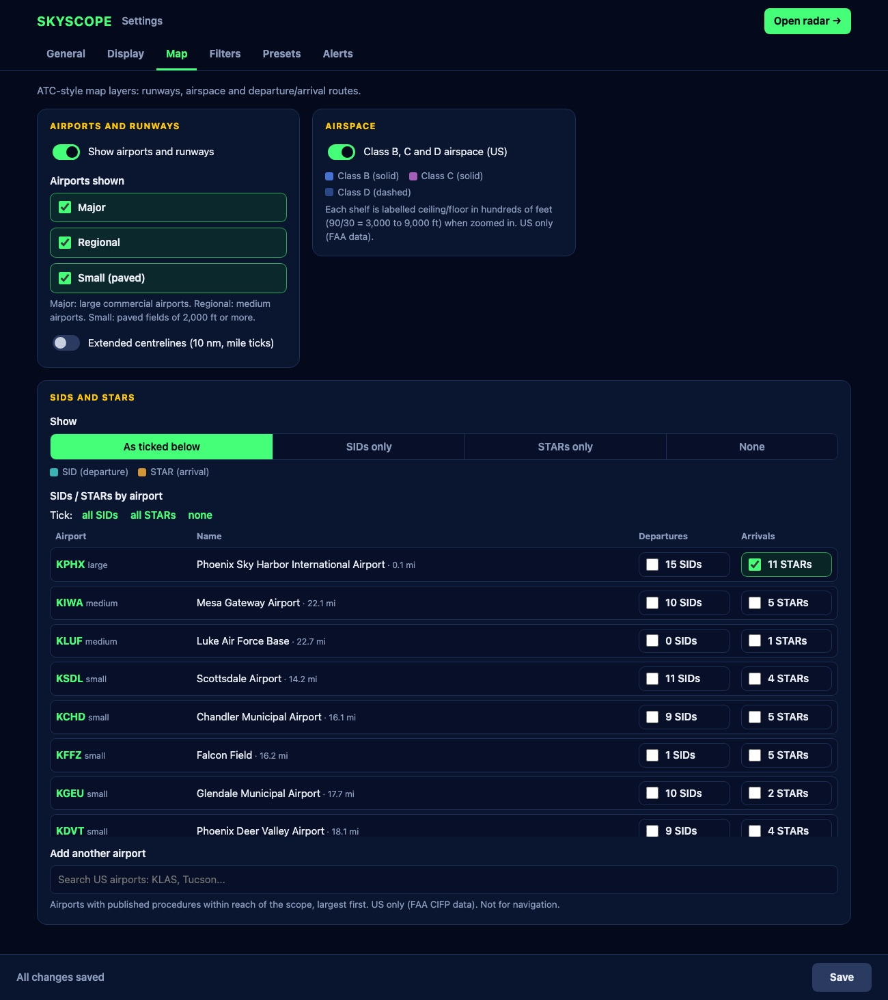
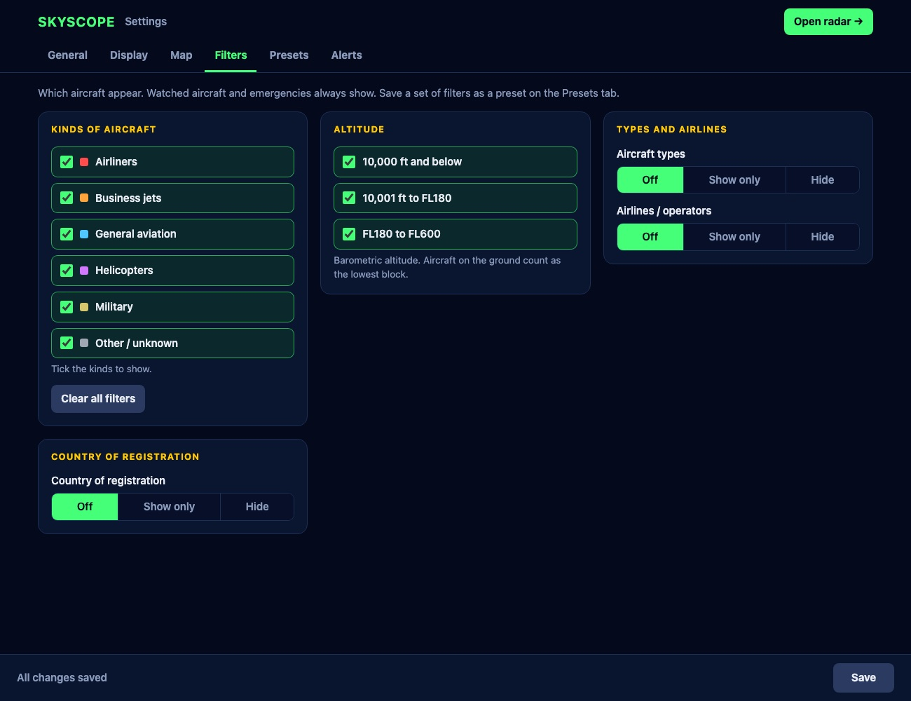
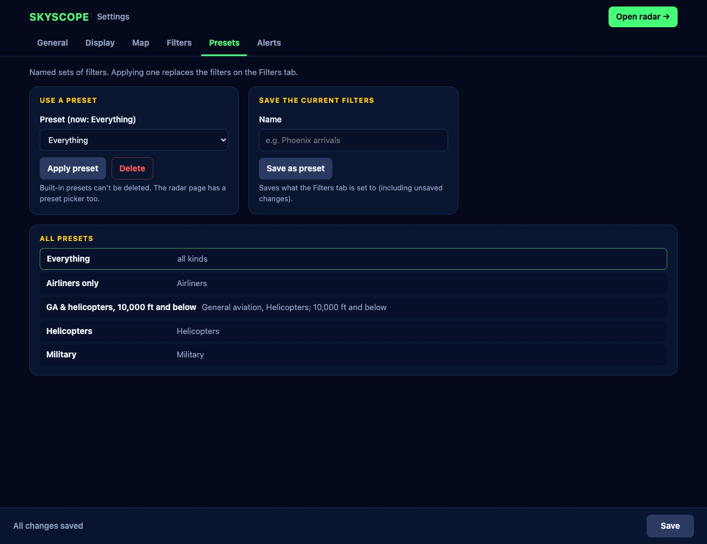

SkyScope
A live aircraft radar styled after an air-traffic-control display, for a Raspberry Pi on a TV or monitor, or any web browser.

Contents
- What SkyScope does
- Requirements
- Installing on a Raspberry Pi
- Running on a laptop or desktop
- First-time setup
- Using the radar
- The settings page
- The ATC map
- Filters and presets
- Alerts and the watchlist
- Your own receiver and GPS
- Troubleshooting
- Quick reference
- SkyScope Satellite and Mini
- Credits and data sources
1. What SkyScope does
SkyScope shows the aircraft around a location you choose, live, on a radar scope. Each aircraft is drawn at its position with a symbol shaped like the aircraft (airliner, business jet, light aircraft, helicopter…), a line showing where it will be in a minute, and a label with its callsign, type and altitude. A side panel lists every aircraft in range with its altitude, distance, bearing and speed, and a card shows details and a photo of the nearest or selected aircraft.
Underneath the traffic you can show an air-traffic-control style map: airports and runways with extended centrelines, US Class B, C and D airspace, and the published departure (SID) and arrival (STAR) routes for airports you pick.
Two ways to display it
| Display | Best for | How |
|---|---|---|
| Pi display | A Raspberry Pi connected to a TV or monitor, running full screen by itself. | python3 skyscope.py |
| Web radar | Any computer, tablet or phone on your network, or a laptop on its own. Sharp on high-resolution screens; extra features such as clicking aircraft and the filter panel. | Open http://<address>:7700/radar, or run python3 skyscope.py --web-only on a laptop. |
Both run at the same time: a Pi can drive the TV while anyone on the network opens the web radar. Everything is configured from a settings web page at http://<address>:7700/radar_config, so the Pi needs no keyboard once it's set up.
Where the aircraft data comes from
- Internet (default): the free adsb.fi service, which pools reports from thousands of volunteer receivers. Needs an internet connection.
- Your own receiver (optional): a USB radio receiver on the Pi picks up aircraft signals directly, with no internet needed. See section 11.
2. Requirements
Raspberry Pi setup
| Item | Needed | Notes |
|---|---|---|
| Raspberry Pi | Pi 5 (recommended) or Pi 4 with 2 GB+ memory | Older models may work but will be slow at long ranges. |
| Power supply | Official supply for your model | Pi 5: 27 W USB-C. Pi 4: 15 W USB-C. |
| microSD card | 16 GB or larger | Class A1 or better. |
| Display | Any HDMI TV or monitor | Widescreen (16:9) is ideal; other shapes work too. A micro-HDMI cable for Pi 4/5. |
| Network | Wi-Fi or Ethernet | Required for internet data, airline logos and photos. |
| Keyboard and mouse | For installation only | Afterwards everything is done from the settings page. |
| Software | Raspberry Pi OS with desktop (64-bit) | Includes Python 3. SkyScope also needs pygame and git (installed below). |
Optional extras
| Item | What it adds |
|---|---|
| USB SDR receiver (RTL-SDR) and a 1090 MHz antenna | Receive aircraft yourself, with no internet. A dongle with a built-in 1090 MHz filter and amplifier (sold for ADS-B) works best. Uses the free readsb software. |
| USB GPS receiver | Centres the radar on the Pi's own position, once or continuously (for a mobile setup). Uses the standard gpsd service. |
Laptop or desktop instead of a Pi
- macOS, Windows or Linux with Python 3.10 or newer.
- The
pygame-cepackage (pip3 install pygame-ce), the community edition of pygame. Classicpygamealso works where it's available for your Python version. - Any current web browser (Chrome, Safari, Firefox, Edge).
Network access used
SkyScope serves its pages on TCP port 7700 on your local network. It connects out (HTTPS) to opendata.adsb.fi for aircraft, api.planespotters.net for photos, and raw.githubusercontent.com for airline logos.
3. Installing on a Raspberry Pi
- Prepare the SD card. On another computer, install Raspberry Pi Imager. Choose your Pi model, Raspberry Pi OS (64-bit) (the version with desktop), and your SD card. When asked to customise settings, set:
- Hostname:
skyscope(so the settings page is athttp://skyscope.local:7700) - Username and password of your choice
- Wi-Fi network and password (skip if using Ethernet), and your time zone
- Hostname:
- Open a terminal on the Pi (the black icon in the top bar) and bring the system up to date:
sudo apt update sudo apt full-upgrade -y - Install what SkyScope needs:
sudo apt install -y python3-pygame git - Download SkyScope into your home folder:
git clone https://github.com/ricsne2010/skyscope.git ~/skyscope - Start it:
The radar fills the screen. Press Q to quit. The first start createspython3 ~/skyscope/skyscope.py~/skyscope/settings.json, which holds your settings. - Start it automatically when the Pi boots. This copies the included launcher into your autostart folder, pointing it at your home folder:
Restart the Pi (mkdir -p ~/.config/autostart sed "s#/home/pi#$HOME#" ~/skyscope/skyscope.desktop > ~/.config/autostart/skyscope.desktopsudo reboot); SkyScope should open full screen after the desktop appears.If it doesn't start on its own, add it to the desktop's own autostart list instead:mkdir -p ~/.config/labwc echo "python3 $HOME/skyscope/skyscope.py &" >> ~/.config/labwc/autostart - Set it up from another device. On a phone or computer on the same network, open
http://skyscope.local:7700/radar_config(orhttp://<pi-address>:7700/radar_config; the address is shown at the bottom of the Pi's screen) and continue with first-time setup.
Updating
cd ~/skyscope && git pullThen restart SkyScope (or the Pi). Your settings.json is kept.
If the Pi struggles
Very long ranges (150 miles and beyond) near busy areas can mean 500+ aircraft. If the Pi display becomes jerky: use filters to show fewer aircraft, choose a shorter range, set the Pi's screen to 1280×720 (Screen Configuration in the Pi menu), or lower fps in settings.json. Another option is to show the web radar full screen in the Pi's browser instead of the Pi display:
python3 ~/skyscope/skyscope.py --web-only &
chromium --kiosk http://localhost:7700/radar4. Running on a laptop or desktop
SkyScope runs on a Mac or a Windows 10/11 PC as well as a Pi. On a computer you use the web radar in your browser, and a desktop icon with a radar-screen picture starts it with one click.
Mac
- Install Python 3.10 or newer from python.org (open the downloaded installer and follow it).
- Download SkyScope: on its GitHub page choose Code → Download ZIP, and unzip it somewhere it can stay, such as your Documents folder. (Or
git clone https://github.com/ricsne2010/skyscope.git.) - Open Terminal, type
cd(with a space), drag the SkyScope folder onto the Terminal window, and press Return. Then install pygame-ce and make the desktop icons:python3 -m pip install pygame-ce sh tools/make_mac_app.sh - Double-click the new SkyScope icon on your Desktop (a Stop SkyScope icon appears beside it). The radar opens in your browser after a few seconds. If macOS asks whether Python may accept incoming network connections, choose Allow, so phones and Satellite displays can reach it.
Windows 10 or 11
- Install Python 3.10 or newer from python.org. On the installer's first screen, tick Add python.exe to PATH, then choose Install Now.
- Download SkyScope: on its GitHub page choose Code → Download ZIP. Right-click the ZIP, choose Extract All, and put the folder somewhere it can stay, such as Documents.
- In the SkyScope folder, open tools, then windows, and double-click create-shortcut.bat. If Windows warns about a file from the internet, choose More info → Run anyway. The window installs pygame-ce if needed and makes the SkyScope and Stop SkyScope shortcuts. Press a key to close it when it says Done.
- Double-click the new SkyScope icon on your Desktop (it's also in the Start menu). The radar opens in your browser after a few seconds. If Windows Firewall asks about Python, allow it on private networks.
Using the icon
- Click it to start SkyScope. It runs in the background, with no window of its own, and opens the radar. Clicking it while SkyScope is running just opens the radar again.
- After restarting the computer, click it again. SkyScope keeps all your settings.
- To stop SkyScope, click Stop SkyScope (the icon with the red stop badge). It says when SkyScope has stopped, or that it wasn't running. Only this computer can stop it; phones and other computers on your network can't.
- If it doesn't start, a message says so, and the details are in
skyscope.login the SkyScope folder. If you move the SkyScope folder or reinstall Python, make the icons again (step 3).
python3 skyscope.py --web-only (on Windows py skyscope.py --web-only), and stop it with Ctrl+C. To use the Pi-style display in a window instead: python3 skyscope.py --window 1280x720. The web radar is sharper on high-resolution (Retina or scaled) laptop screens.5. First-time setup
Open the settings page (http://<address>:7700/radar_config). The tabs across the top hold every option; nothing changes until you press Save in the bar at the bottom, which shows "Unsaved changes" whenever there's something to save.

- Choose the centre. On the General tab, with Manual selected, either search for an airport (by code or name, such as
KDVT,PHXorHeathrow) and pick it, or type a latitude and longitude. On a laptop, Use this computer's location fills them in for you. - Pick your units on the Display tab: distance (km, statute miles or nautical miles), speed and altitude.
- Pick a range on the Display tab: the distance from the centre to the outer ring.
- Press Save, then Open radar (top right) to see the result.
6. Using the radar
The scope
- Range rings are labelled with their distances along the east line. The range is the distance to the outer ring.
- Aircraft are drawn with a shape for their kind and a line showing where they'll be in about a minute. Labels give callsign, type and altitude; in busy areas some labels are left off to keep things readable (every aircraft is still in the list).
- The yellow circle marks the nearest aircraft. Gold rings mark watched aircraft and a flashing red symbol marks an emergency (see section 10).
- The green sweep is decorative; its speed and trail can be changed or switched off.
- Optional dots on the rim show aircraft just outside the range, in their direction.
The panel
The top shows the centre, the number of aircraft, the data source and how fresh the data is. The card below shows the nearest aircraft, or the one you've selected: callsign, aircraft type and registration, the route of an airline flight (for example KPHX → KOAK · Phoenix → Oakland), altitude and climb or descent, distance and bearing, and ground speed (plus airspeed when the aircraft reports it). When Planespotters.net has a photo of that exact aircraft, a thumbnail appears; click it to open the full photo. Otherwise the box shows a plane outline and No image available (or Finding photo… for a moment while it looks). The list shows every aircraft in range, nearest first, with units under each column heading.


On the web radar
- Click an aircraft (its symbol or label) or a row in the list to select it. Brackets mark it on the scope and the card shows its details. Click it again, or press Esc, to clear the selection. Hovering over a row highlights that aircraft on the scope.
- ⚙ Filters at the bottom of the panel opens a panel to choose kinds of aircraft, altitude blocks, a preset and the SIDs/STARs switch. Changes apply at once.
- R or Space: next range. F: full screen. Clicking empty space never changes the range.
- Settings and Guide links at the bottom open the settings page and this guide.
On the Pi display
With a keyboard attached: R/Space/→ next range, ← previous range, U distance units, W runways, S sweep, A symbol style, L logos, D rim dots, G aircraft on the ground, F full screen, Q quit. Everything else is on the settings page.
7. The settings page
| Tab | What's on it |
|---|---|
| General | Where the radar is centred (manual, an airport, or GPS) and where aircraft data comes from (internet or your own receiver). |
| Display | Range; aircraft symbols (silhouettes or simple triangles); colouring aircraft by kind; airline logos; the aircraft photo; rim dots; aircraft on the ground; units; the sweep. |
| Map | Airports and runways, extended centrelines, airspace, and SIDs/STARs per airport. See section 8. |
| Filters | Which aircraft appear. See section 9. |
| Presets | Named sets of filters: apply, save and delete. |
| Alerts | Emergency highlighting and the watchlist. See section 10. |
| About | SkyScope's version, the addresses of this radar (including the one to give a Satellite display), links to this guide and the project pages, data sources and credits. |
The page works on phones as well as computers. Anyone on your network can open it; there is no password.
8. The ATC map

Airports and runways
Runways are drawn to scale. Runways of 5,000 ft or more get extended centrelines reaching 10 nautical miles out, with a tick every mile and a longer tick every five, as on an approach-control display. Runway numbers appear at the ends when zoomed in. Choose which airports appear: Major, Regional and Small (paved), each on or off. Airport data covers the whole world.
Airspace (US)
Class B (solid blue), Class C (solid magenta) and Class D (dashed blue) outlines from the FAA. When zoomed in, each shelf is labelled with its ceiling over its floor in hundreds of feet: 90/30 means from 3,000 to 9,000 feet.
SIDs and STARs (US)
The Map tab lists every airport with published departure (SID) and arrival (STAR) routes within reach of the scope, larger airports first, with how many each has. Tick SIDs, STARs or both for each airport you want; use Add another airport for one further away. Departures are drawn in teal and arrivals in amber, with the waypoints (△) named. The Show switch (also in the web radar's Filters panel) hides them all, or shows only SIDs or only STARs, without losing your choices.
9. Filters and presets

- Kinds of aircraft: airliners, business jets, general aviation, helicopters, military, and other/unknown. A light aircraft flying a flight school's callsign counts as general aviation.
- Altitude: 10,000 ft and below; 10,001 ft to FL180; FL180 to FL600.
- Aircraft types: show only, or hide, a list of type codes such as
B738, A32*, C172(*matches anything). - Airlines: show only, or hide, by the three-letter code at the start of the callsign, such as
AAL, SWA, UAL. - Country of registration: worked out from each aircraft's transponder address, so it works even when the registration is unknown.
While any filter is on, the panel says, for example, "35 of 134 aircraft (filtered)". Emergencies and watched aircraft are always shown.
Presets
Built-in presets: Everything, Airliners only, GA & helicopters, 10,000 ft and below, Helicopters and Military. To make your own, set the filters you want, then on the Presets tab type a name and press Save as preset. Apply presets on the Presets tab or from the web radar's Filters panel.

10. Alerts and the watchlist
- Emergencies: aircraft squawking 7700 (emergency), 7600 (radio failure) or 7500 (hijack), or reporting an emergency status, flash red with a pulsing ring, are labelled first, move to the top of the list and get a red banner in the panel.
- Watchlist (Alerts tab): callsigns, registrations, transponder addresses or type codes, with
*wildcards, for exampleN123AB, ENY*, B52. Matching aircraft get a gold ring and a ★ in the list, are labelled first, and optionally get a gold banner while in range.
11. Your own receiver and GPS
Receiving aircraft yourself
- Plug an RTL-SDR dongle with a 1090 MHz antenna into the Pi. Place the antenna as high as possible with a clear view of the sky.
- Install
readsb, the decoding software, and tell it your location:sudo bash -c "$(wget -O - https://github.com/wiedehopf/adsb-scripts/raw/master/readsb-install.sh)" sudo readsb-set-location <your-latitude> <your-longitude> - On the settings page's General tab, set Aircraft data from to SDR receiver and save. With the location left at
auto, SkyScope finds readsb (or dump1090/PiAware) by itself; the status line says which it's reading.
Range now depends on your antenna and its view of the sky. Aircraft types and names may be blank for some aircraft unless readsb's aircraft database is enabled.
Centring on a GPS position
- Plug in a USB GPS receiver and install the GPS service:
USB receivers are usually detected automatically. For a GPS add-on board on the serial port, setsudo apt install -y gpsdDEVICES="/dev/serial0"in/etc/default/gpsdand runsudo systemctl restart gpsd. - On the General tab, choose GPS once (reads the position when SkyScope starts: for a fixed installation) or GPS live (keeps re-centring every few seconds as you move), and save. The status line shows the fix and number of satellites.
12. Troubleshooting
| Problem | What to try |
|---|---|
| The panel says "No data" or "Waiting for data" | Check the Pi's internet connection. With an SDR receiver, read the status line on the General tab: it says whether readsb was found and whether its data is current. |
| "HTTP Error 429: Too Many Requests" | adsb.fi allows one request per second. Make sure only one copy of SkyScope runs per network address; it recovers by itself. |
| The settings page won't open from another device | Use the address shown at the bottom of the Pi's screen. Both devices must be on the same network. .local names can be slow on some devices; use the numeric address instead. |
| An aircraft is in the list but not on the scope | Aircraft are drawn once they're inside the outer ring; the list shows the same set. Turn on rim dots (Display tab) to see aircraft just beyond the range. |
| No route for an airline flight | ADS-B carries no flight plan, so routes come from a community database by flight number (adsbdb.com). It doesn't know every flight, and flight numbers get reused, so SkyScope shows a route only when it fits where the aircraft is: better none than a wrong one. Private and VFR flights have no published route. Turn routes off on the Display tab. |
| “No image available” for an aircraft | Photos only appear when Planespotters.net has one of that exact aircraft; many light aircraft and helicopters have none. To hide the photo box altogether, turn off the aircraft photo on the settings page's Display tab. |
| No SIDs or STARs appear | Tick SIDs or STARs for at least one airport on the Map tab, and check the Show switch isn't set to None. Only US airports have this data. |
| "Use this computer's location" is missing | Browsers only share location with the computer running SkyScope (localhost). On a Pi, type the position, pick an airport, or use GPS. |
| The Pi display is jerky | See If the Pi struggles in section 3. |
13. Quick reference
| Address | What it is |
|---|---|
http://<address>:7700/radar | The web radar (also the bare :7700 address) |
http://<address>:7700/radar_config | The settings page |
http://<address>:7700/radar_config#about | The settings page's About tab |
http://<address>:7700/guide | This guide |
http://<address>:7700/api/satellite | The feed SkyScope Satellite displays read |
| Command | What it does |
|---|---|
python3 skyscope.py | Pi display, full screen. It opens with a three-second start-up screen (the Project Moon Pi logo, the version and the credit) while the first aircraft load; any key skips it |
python3 skyscope.py --window 1280x720 | Pi display in a window |
python3 skyscope.py --web-only | Web radar only, and opens it in the browser |
python3 skyscope.py --no-splash | Starts without the start-up screen |
| Ranges | Choices (distance to the outer ring) |
|---|---|
| Statute miles | 2, 5, 10, 15, 25, 50, 75, 100, 150, 200, 250 |
| Kilometres | 5, 10, 15, 25, 50, 100, 150, 200, 300, 400 |
| Nautical miles | 2, 5, 10, 20, 40, 60, 80, 100, 150, 200 |
All settings are stored in settings.json in the SkyScope folder. The README lists every entry for anyone who prefers to edit it by hand.
14. SkyScope Satellite and Mini
Two smaller companions run on an inexpensive 4.3-inch touch display with a built-in ESP32-S3 microcontroller (the Sunton ESP32-8048S043, 800 × 480). Each has its own project page with installation instructions.
| SkyScope Satellite | SkyScope Mini | |
|---|---|---|
| What it is | A second screen for this SkyScope: it shows the same radar, range, filters and map | A small radar of its own; no Raspberry Pi needed |
| Data | From this SkyScope over your network | From adsb.fi over Wi-Fi |
| Map | Everything this SkyScope shows: runways, airspace, SIDs and STARs | Runways at major airports |
| Set up from | This settings page (it follows SkyScope's settings) | Its own small web page |
| Project page | github.com/ricsne2010/skyscope-satellite | github.com/ricsne2010/skyscope-mini |
Connecting a Satellite
A Satellite looks for skyscope.local on your network unless told otherwise. Either name the SkyScope computer skyscope (on a Raspberry Pi: sudo raspi-config → System Options → Hostname), or type the address shown under Satellite address on the About tab into the Satellite's setup page. SkyScope must be running with the settings page on (port 7700, the default). Several Satellites can follow one SkyScope.
15. Credits and data sources
SkyScope grew out of ESP32-Plane-Radar by MatixYo (MIT licence), a radar for a small round display on an ESP32 microcontroller.
| Data | Source | Terms |
|---|---|---|
| Live aircraft | adsb.fi open data, or your own receiver | adsb.fi's terms (one request per second) |
| Airports and runways | OurAirports | Public domain |
| US airspace | FAA Class Airspace data | Public domain |
| US SIDs and STARs | FAA CIFP (updated every 28 days) | Public domain |
| Country from transponder address | ICAO address allocations | Facts |
| Airline logos | Jxck-S/airline-logos, downloaded when first needed | Airlines' trademarks |
| Aircraft photos | Planespotters.net, shown with the photographer's credit | Photographers' copyright |
| Flight routes | adsbdb.com, by flight number | Free community data |
| Software | Source | Licence |
|---|---|---|
| Language and display | Python, pygame (or pygame-ce) | PSF; LGPL 2.1 |
| Built with | Claude Code (Anthropic): designed, written and tested with Claude |
 SkyScope was designed and created by Project Moon Pi, built with Claude Code (Anthropic), and is free software under the MIT licence. Source: github.com/ricsne2010/skyscope.
SkyScope was designed and created by Project Moon Pi, built with Claude Code (Anthropic), and is free software under the MIT licence. Source: github.com/ricsne2010/skyscope.